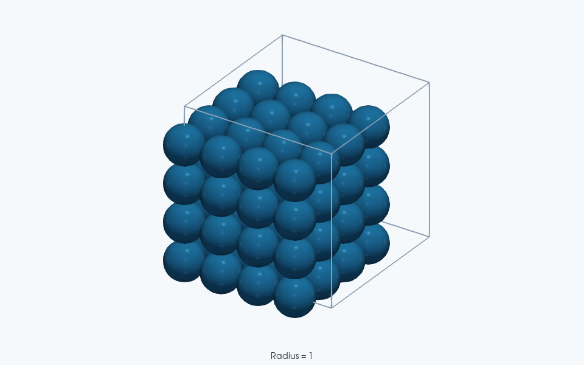

Note
Go to the end to download the full example code.
Batch Sharding Across GPUs#
Distribute a batch of independent simulations across multiple devices using
JAX’s Mesh and NamedSharding. This is data / batch parallelism for
parameter sweeps and ensembles (each device holds complete simulations), not
spatial domain decomposition of a single system.
To test multi-device sharding locally on a CPU machine, launch Python with
XLA_FLAGS="--xla_force_host_platform_device_count=4".
Create One Setup#
Define a pure function that builds one (State, System) from a PRNG key.
Here we place 64 unit-radius spheres on a 4x4x4 periodic grid at packing
fraction \(\phi = 0.5\):
import jax
import jax.numpy as jnp
from jax.sharding import Mesh, NamedSharding, PartitionSpec as P
import jaxdem as jdem
n_per_axis = 4
n_particles = n_per_axis**3
phi = 0.5
box_length = (n_particles * (4.0 * jnp.pi / 3.0) / phi) ** (1.0 / 3.0)
def create_setup(key: jax.Array) -> tuple[jdem.State, jdem.System]:
state = jdem.utils.grid_state(
n_per_axis=(n_per_axis, n_per_axis, n_per_axis),
spacing=box_length / n_per_axis,
key=key,
)
state.vel = 0.5 * jdem.utils.unit(state.vel)
system = jdem.System.create(
state=state,
key=key,
dt=1e-2,
domain_type="periodic",
domain_kw={"box_size": jnp.full(3, box_length)},
collider_type="neighbor_list",
# Pass explicit static cell_size/search_range because create_setup runs
# inside jax.vmap where state.rad is traced:
collider_kw={
"cutoff": 2.0,
"skin": 0.2,
"max_neighbors": 32,
"secondary_collider_type": "cell_list",
"secondary_collider_kw": {"cell_size": 2.2, "search_range": 1},
},
)
return state, system
state, system = create_setup(jax.random.key(0))
print("One setup:", state.pos.shape)
One setup: (64, 3)
Run Sharded Dynamics#
initialize() and
step() preserve the batch sharding
automatically. Use jax.device_get when collecting summary arrays back to
the host:
batch_state, batch_system = jdem.System.initialize(batch_state, batch_system)
batch_state, batch_system = jdem.System.step(batch_state, batch_system, n=5)
jax.block_until_ready((batch_state, batch_system))
batch_system.check_overflow()
for shard in batch_state.pos_c.addressable_shards:
print(f"{shard.device}: shard shape {shard.data.shape}")
print("Step counts:", batch_system.step_count)

ParaView rendering of this run’s VTKWriter output.
cpu:0: shard shape (16, 64, 3)
Step counts: [5 5 5 5 5 5 5 5 5 5 5 5 5 5 5 5]
Total running time of the script: (0 minutes 37.300 seconds)